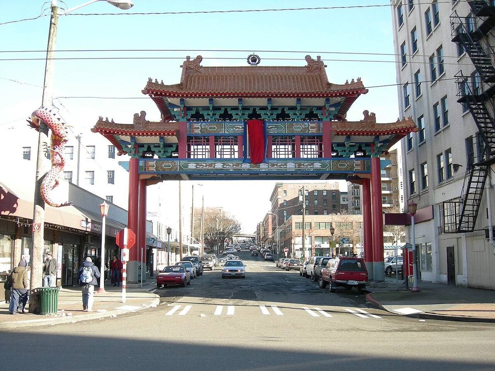

Living in International District

The Chinatown–International District is a neighborhood of Seattle, Washington. It is the center of the city's Asian American community. Within the district are the three neighborhoods known as Chinatown, Japantown and Little Saigon, named for the concentration of businesses owned by people of Chinese, Japanese and Vietnamese descent, respectively. The geographic area also once included Manilatown. (From Wikipedia, CC BY-SA 4.0)
International District is a neighborhood in Downtown, Seattle with about 5,316 residents. The typical home value is about $450K (-3.8% over the past year), and 22 homes sold in the last 12 months. It is very walkable, with higher crime than most neighborhoods in the area.
Home prices and the market
Home prices and the market
| Typical home value | $450K · -3.8% over 12 months |
|---|---|
| Homes sold, last 12 months | 22 · median sale price $362K · 22 were condos |
| Homes for sale (estimate) | 18 · homes typically go under contract in 18 days |
| Median household income | $42K · 155th highest income of 155 |
Schools
Schools
| Elementary | Bailey Gatzert Elementary School, 0.3 mi · 31% meet standard Area average 47% · 131st best elementary schools of 155 |
|---|---|
| Middle school | Washington Middle School, 0.8 mi · 48% meet standard Area average 46% · 126th best middle schools of 155 |
| High school | Summit Public School: Sierra, 0.1 mi · 38% meet standard Area average 52% · 145th best high schools of 155 |
| Nearest college | Seattle University, 0.8 mi |
Share of students meeting the Washington state standard in English and math (2024-25). The nearest school is not always the assigned school; check with the school district.
Safety
Safety
About 179 crimes per 1,000 residents a year (violent crimes counted three times), higher crime than most neighborhoods in the area: 147th lowest crime of 155. Based on mapped police incidents in this neighborhood, scaled to the city's FBI-reported rate. Busy commercial areas can look high because visitors are not counted as residents.
Getting around
Getting around
| Walkability | 19.0 of 20 (very walkable) · 3rd most walkable of 155 |
|---|---|
| Light rail or train | 7th & Jackson, 0.1 mi · 2nd closest to rail of 155 |
| Nearest bus stop | S Jackson St & 8th Ave S, 0.05 mi |
| How residents commute | 32% take transit · 22% work from home |
Everyday amenities
Everyday amenities
| Grocery store | Dong Hing Market, 0.1 mi · 7 within a mile |
|---|---|
| Pharmacy | Ho's Herb & Massage, 0.2 mi |
| Restaurants | 182 within a mile · 10th most restaurants nearby of 155 |
| Shopping | Pioneer Square, 0.7 mi |
| Hospital | Harborview Medical Center, 0.4 mi · 34 clinics within 2 miles |
| Library | International District / Chinatown Library, 0.2 mi |
Parks and recreation
Parks and recreation
| Nearest park | Kobe Terrace Park, 0.2 mi · 95 acres of parks within a mile |
|---|---|
| Large green space | Lake Washington Boulevard, 1.4 mi |
| Walking trail | I-90 Trail, 0.3 mi |
| Gyms, spas and studios | 24 within a mile |
| Golf | Jefferson Park Golf Course, 1.9 mi |
Thinking about International District?
Rachel Yo, Realogics Sotheby's International Realty, can walk you through homes for sale, recent sales and what to know before you buy here.
Your details go only to Rachel Yo at Realogics Sotheby's International Realty to answer your request. They are not sold or shared, and your mobile number and texting permission are never shared with anyone for marketing.
Nearby neighborhoods
- Yesler TerraceSeattle · $562K
- Pioneer SquareSeattle · $589K
- First HillSeattle · $540K
- MinorSeattle · $785K
- Central Business DistrictSeattle · $591K
- SODOSeattle · $437K
Data as of: home values Zillow 2026-09; recorded sales Nov 2025 – Oct 2026; schools OSPI 2024-25; Census ACS 2020-2024. Distances are straight-line from the center of the neighborhood.